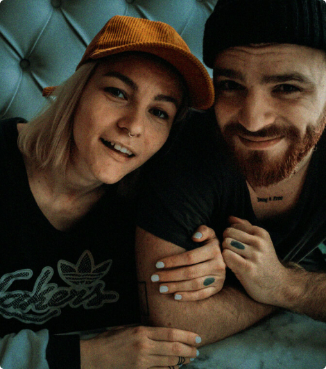
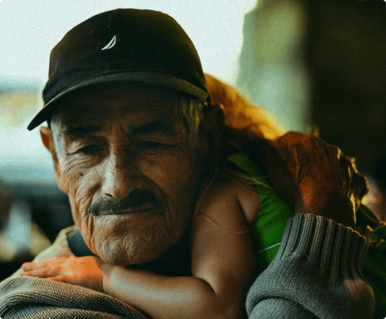
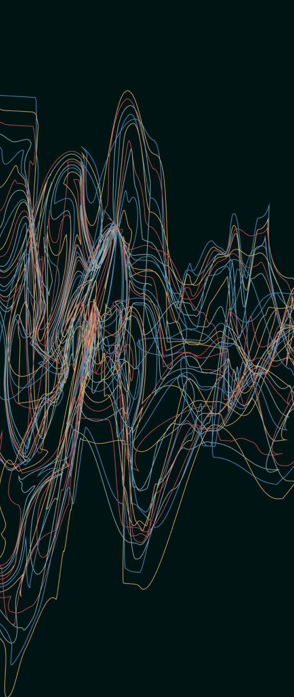
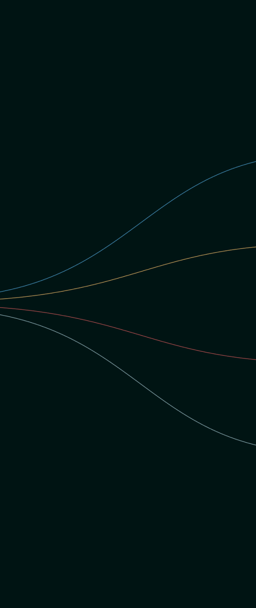
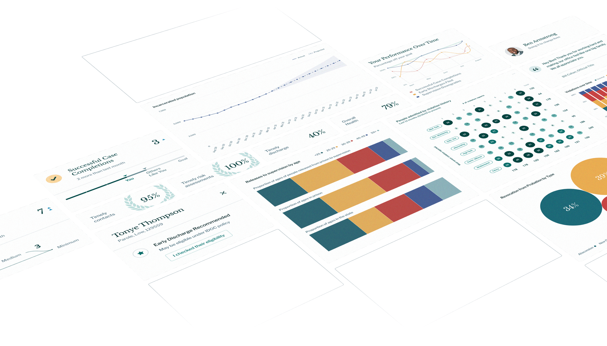

Every person who safely transitions back to the community is a step toward a better society.
Criminal justice leaders use Recidiviz to get a real-time picture of their system, diagnose issues, and drive meaningful changes.
See our work in action
Trusted in:
Idaho
Idaho
Idaho
Idaho
Idaho
Idaho
We are a non-profit that partners with state criminal justice agencies to advance their use of data and reduce incarceration.
1
intake an agency’s disjointed data
2
deploy tools for all levels of decision making
3
improve outcomes for justice-impacted individuals
A human–centered definition of success.
Our approach is shaped by the perspective and experience of people impacted by the justice system. Together, we are focused on restoring equity and supporting success in the community.
Our approach


TED Talks
The New York Times
StateScoop
Associated Press
Time
Freethink

See the forest and the trees.
The criminal justice system can't support safe, whole communities without feedback on what’s working and what’s not. We stitch together data from fragmented systems to provide decision-makers with the information they need to improve outcomes. With this data, we surface opportunities to safely chart a path to a smaller system, and to track the impact of policy and practice changes over time.


Get the right information to the right person at the right time.
For Leaders
Set goals, forecast the impact of policy or practice changes, and track their outcomes across your agency.
For Line Staff
Track probation and parole outcomes, see what’s leading to success, and reduce recidivism with our case management system.
For the Public
Use open source code, public data, interactive tools, and data visualizations to understand the state of incarceration, promote accountability, and conduct research.
For Policymakers and Advocates
Project the impact of policies on carceral, fiscal, and community outcomes. Understand where disparities begin, where they grow, and whether a policy is likely to increase or reduce them.
TED Talks
2.22.22
Correctional News
2.2.22
Department of Justice
1.26.22
The New York Times
12.27.21
Corrections1
11.18.21
Right on Crime
9.9.21